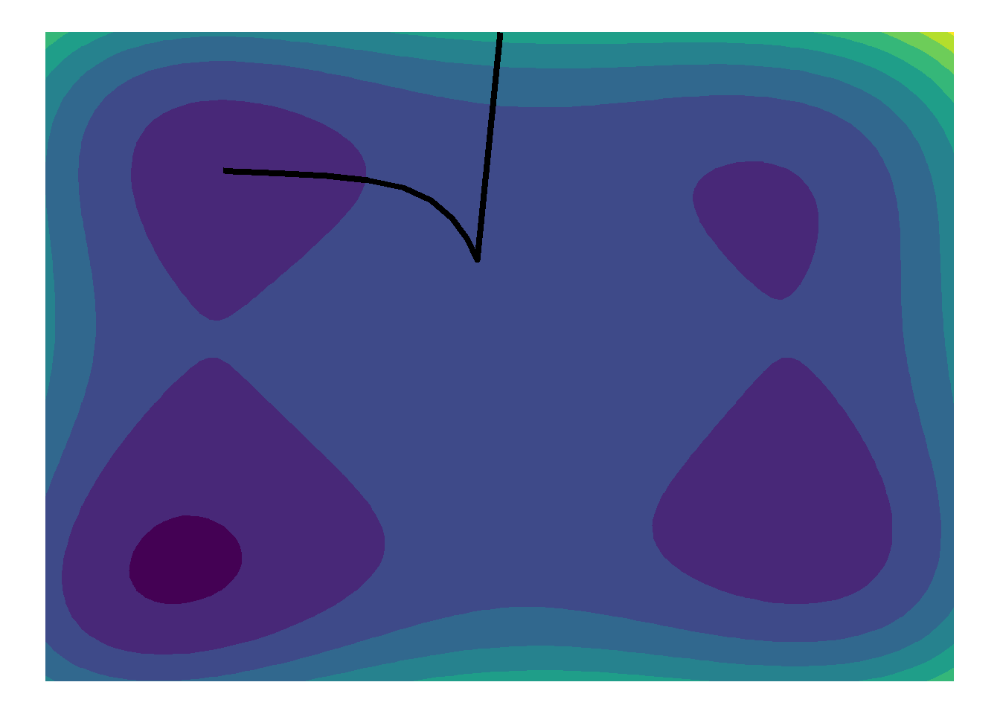
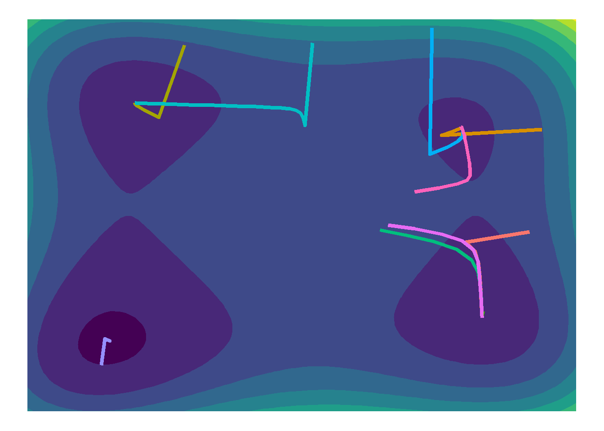
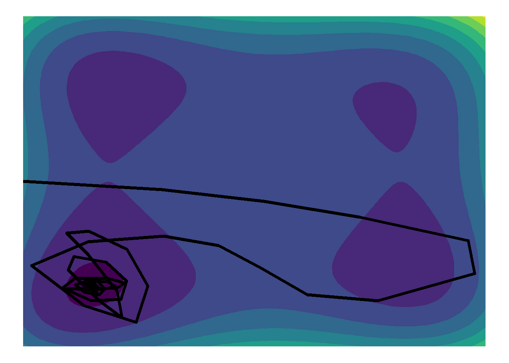

\[f(x_1,x_2)= x_1^4+x_2^4+x_1^2x_2+x_1x_2^2-20x_1^2-15x_2^2\] para responder os itens a seguir.
a)
Apresente um gráfico com as curvas de nível de \(f(x_1,x_2)\). Quantos pontos críticos a função parece ter? Dica para usuários do R: use a função geom_contour_filled().
Observando o gráfico de contorno, considerando valores \(-5 < x_1,x_2 < 5\), a função aparenta ter diversos valores críticos, sendo três mínimos locais, um mínimo global — próximo do valor \(x_1 = -3.5, x_2 = -3.2\) —, além de diversos pontos de sela entre os mínimos locais e global.
b)
Encontre (algebricamente) o gradiente de f em relação ao vetor x = (x1, x2). Isso é, \[\nabla_xf(\mathbf{x})= \left( \frac{\partial f}{\partial x_1},\frac{\partial f}{\partial x_2} \right). \]
Seja
\[
f(x_1,x_2)= x_1^4+x_2^4+x_1^2x_2+x_1x_2^2-20x_1^2-15x_2^2,
\] e
Crie uma função computacional que implemente o método do gradiente para minimizar a função em estudo. Permita ao usuário definir a taxa de aprendizado, o número de passos e o ponto de partida.
Além do solicitado no enunciado, adicionei também um critério de parada, seja por convergência ou por divergência, evitando custo computacional desnecessário. O usuário define o número máximo de iterações, porém se o gradiente convergir ou divergir antes deste máximo, a função irá retornar os passos antes do final do loop.
d)
Use a função criada no item c) para encontrar o valor obtido pelo método do gradiente partindo-se do ponto inicial \((x_1^{(0)},x_2^{(0)})=(0,5)\). Use taxa de aprendizado igual a 0.01 e execute 100 passos.
Mostrar códigos
gradiente(0.01,100,0,5)[[1]]
Ver tabela
Mostrar códigos
datatable(gradiente(0.01,100,0,5)[[2]])
e)
Repita o item d), agora com as seguintes taxas de aprendizado: 1, 0.1, 0.01, 0.001, 0.0001. Qual dessas opções lhe parece mais apropriada nesse caso? Justifique sua resposta.
Learning rate = 1
Ver tabela
Mostrar códigos
datatable(gradiente(1,100,0,5)[[2]])
Learning rate = 0.1
Ver tabela
Mostrar códigos
datatable(gradiente(0.1,100,0,5)[[2]])
Learning rate = 0.01
Mostrar códigos
gradiente(0.01,100,0,5)[[1]]

Ver tabela
Mostrar códigos
datatable(gradiente(0.01,100,0,5)[[2]])
Learning rate = 0.001
Mostrar códigos
gradiente(0.001,100,0,5)[[1]]
Ver tabela
Mostrar códigos
datatable(gradiente(0.001,100,0,5)[[2]])
Learning rate = 0.0001
Mostrar códigos
gradiente(0.0001,100,0,5)[[1]]
Ver tabela
Mostrar códigos
datatable(gradiente(0.0001,100,0,5)[[2]])
Nota-se pelos resultados que para valores de learning rate\(\epsilon = (1;0,1)\) a função divergiu. Para valores \(\epsilon = (0,001; 0,0001)\) a função iterou até o limite de 100 iterações fixadas, e não chegou a um mínimo segundo o critério de parada definido, sendo que para \(\epsilon = 0,0001\) o valor da função de perda ainda estava bem longe do valor alvo. Por outro lado, para \(\epsilon = 0,01\), a função chegou a um mínimo segundo o critério de parada definido, e o fez em poucas iterações, ativando a cláusula de parada por convergência numérica.
Desta forma, o valor \(\epsilon = 0,01\) parece ser o mais coerente dentre as opções apresentadas.
f)
Fixe a semente do gerador de números aleatórios no valor 42 (se estiver usando o R, basta executar o código set.seed(42)). Repita novamente o item d), agora partindo de 10 pontos escolhidos aleatoriamente (Uniformemente) no quadrado \(-5 < x_1, x_2 < 5\). Refaça o gráfico do item a) e adicione uma linha representando o caminho percorrido por cada uma das 10 otimizações. Qual foi o percentual de vezes em que o algoritmo encontrou o mínimo global da função (despresando um eventual desvio de menor importância)?
Mostrar códigos
set.seed(42)pontos <-runif(20, -5, 5)trajetorias <-list()for (i in1:10) { resultado <-gradiente(learning_rate =0.01, n_steps =100, x1 = pontos[i], x2 = pontos[i+10])[[2]] trajetorias[[i]] <- resultado}traj_all <-do.call(rbind, Map(function(df, id) { df$traj_id <- id df}, trajetorias, seq_along(trajetorias)))ggplot() +geom_contour_filled(data = grid, aes(x = x1, y = x2, z = fx)) +geom_path(data = traj_all, aes(x = x1, y = x2, group = traj_id, color =as.factor(traj_id)), linewidth =1.5) +theme_void() +theme(legend.position="none")

Analisando o gráfico, nota-se que em apenas uma das tentativas, o algoritmo convergiu para o mínimo global aparente. Todas as outras tentativas convergiram, porém para um dos três mínimos locais aparentes.
Este resultado concide com o discutido em sala de aula, isto é, o método do gradiente descendente é eficaz em buscar mínimos de função, porém na sua forma mais simples de implementação, ele é incapaz de escapar de um mínimo local, visto que irá tomar uma trajetória descendente sempre que encontrar um mínimo próximo do ponto em que está. Sabe-se que em funções estritamente convexas, o gradiente descendente irá encontrar o mínimo global. Entretanto, funções com mínimos locais e pontos de sela podem atrapalhar a convergência do algoritmo. Neste caso, uma das possíveis soluções discutidas e aqui implementadas é justamente testar vários pontos iniciais, na esperança que algum ou alguns deles iniciem-se próximos ao mínimo global da função. Neste caso bidimensional, a figura ajuda bastante a identificação dos mínimos e as convergências, entretanto num caso multidimensional, bastaria avaliar o valor da função para identificação do mínimo global, ou ao menos um mínimo local bom o suficiente.
g)
Repita o item d), substituindo o método do gradiente pelo método do gradiente com momento (veja a Seção 8.3.2 do livro Deep Learning). Use taxa de aprendizado \(\epsilon = 0.01\), parâmetro de momento \(\alpha = 0.9\) e velocidade inicial v = 0.
Pela Figura acima, nota-se que adicionando o componente de momento ao algoritmo de gradiente descendente, os passos da função de tornam muito mais erráticos, permitindo que a função passeie pelo espaço paramétrico por mais tempo, e impedindo o gradiente de descer nos primeiros vales que percorre. É possível observar que a função passou por todos os quatro vales de mínimos, até convergir em um dos mínimos locais.
Mostrar códigos
gradiente_momento(.9,.01,100,-5,0)

Observando a Figura acima, nota-se que mudando o ponto de partida, o algoritmo conseguiu cumprir o seu propósito, isto é, escapar de um mínimo local e direcionar para o aparente mínimo global da função de perda.
Desta forma, pode-se dizer que adicionar o conceito de momento pode ser útil para impedir o gradiente de estacionar em mínimos locais, entretanto isto ainda não é garantindo, dependendo ainda bastante do ponto inicial escolhido.
h)
Repita o item d), substituindo o método do gradiente pelo método RMSProp (veja a Seção 8.5.2 do livro Deep Learning). Use taxa de aprendizado \(\epsilon = 0.001\), taxa de decaimento \(\rho = 0.9\) e constante \(\delta = 10^{-6}\).
Pelo gráfico acima, nota-se que o algoritmo aparenta estar caminhando para um mínimo local. Entretanto, a taxa de aprendizagem baixa e um número reduzido de passos impede de localizar o mínimo local. Ajustando a taxa de aprendizagem para \(\epsilon = 0.1\), podemos observar visualmente o caminhar do algoritmo ao mínimo local mais próximo do ponto inicial.
Repita o item d), substituindo o método do gradiente pelo método ADAM (veja a Seção 8.5.3 do livro Deep Learning). Use taxa de aprendizado \(\epsilon = 0.001\) e taxas de decaimento \(\rho_1 = 0.9\) e \(\rho_2 = 0.999\).
Análogo ao item anterior, o learning rate \(\epsilon = 0.001\) é muito baixo para o algoritmo encontrar o mínimo local no número de passos fornecidos (100). Ajustando o learning rate para \(\epsilon = 0.1\), mantido os demais hiperparâmetros constantes, pode-se observar na Figura abaixo a convergência do algoritmo para o mínimo local mais próximo do ponto inicial.
Mostrar códigos
gradiente_adam(.1,100,0,5,.9,.999,10e-8)[[1]]
j)
Apresente graficamente, em uma única figura, os caminhos percorridos pelas otimizações executadas nos itens d), g), h) e i).
Pela Figura acima, nota-se que todos os algoritmos são eficazes em encontrar um ponto de mínimo, ainda que local. Nenhum deles conseguiu eliminar a necessidade de um bom ponto inicial para encontrar o mínimo global da função. Entretanto, como discutido em sala, não faz parte do paradigma de redes neurais artificiais no estado da arte atual a necessidade do mínimo global da função. Desta forma, estaremos mais preocupados com algoritmos que funcionem bem, e funcionem rápido, na busca pela convergência em algum ponto de mínimo aceitável. Neste sentido, todos foram eficientes, entretanto é possível notar que o gradiente na forma elementar pode ter problemas com pontos de sela e mínimos ruins, enquanto o método do momento pode ser muito errádico. Os métodos RMSProp e Adam aparentam ser mais estáveis, de rápida convergência para um mínimo aceitável e caminhar pouco errático.